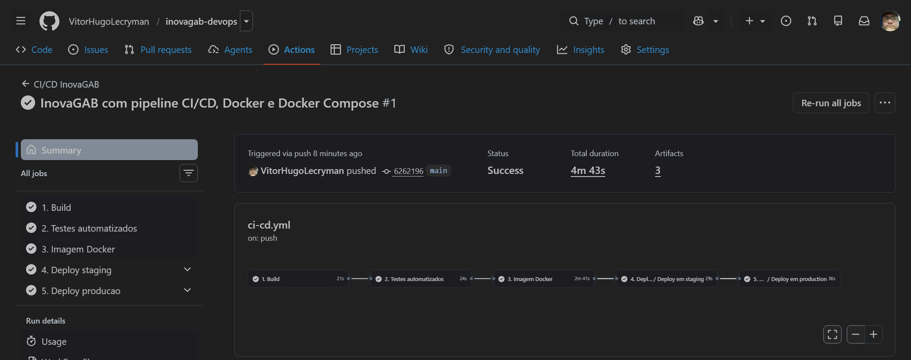
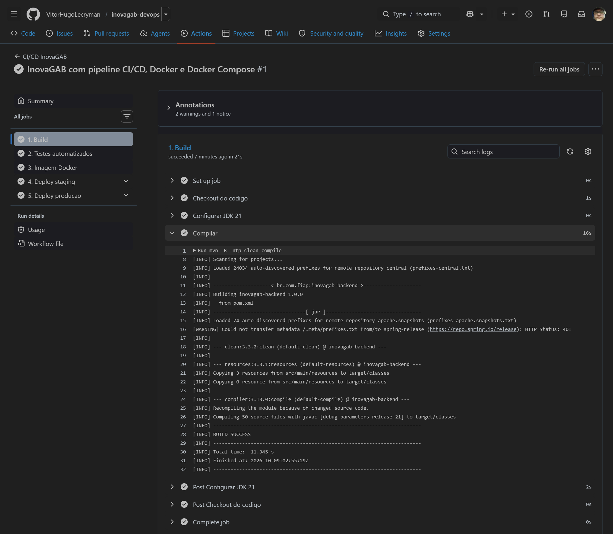
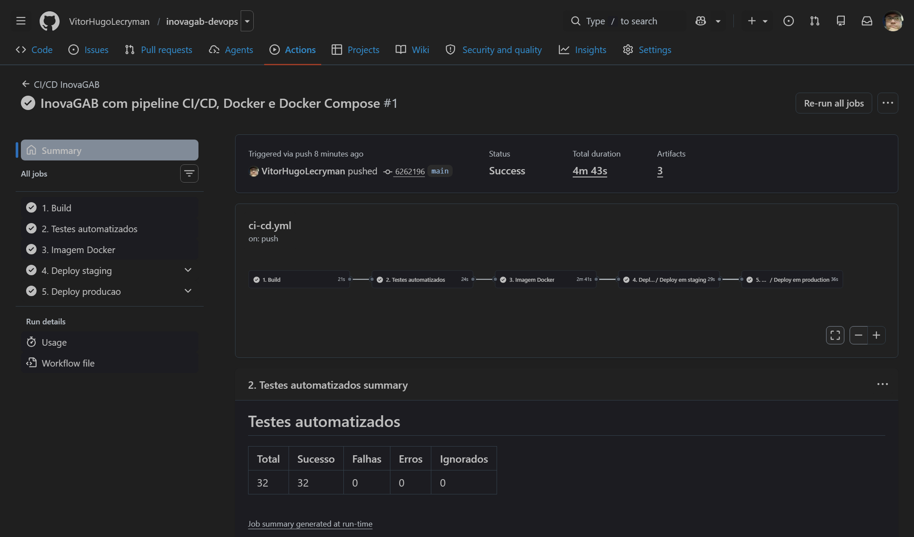
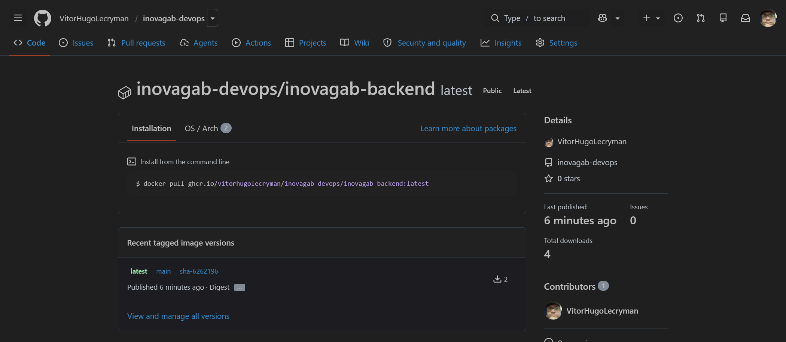
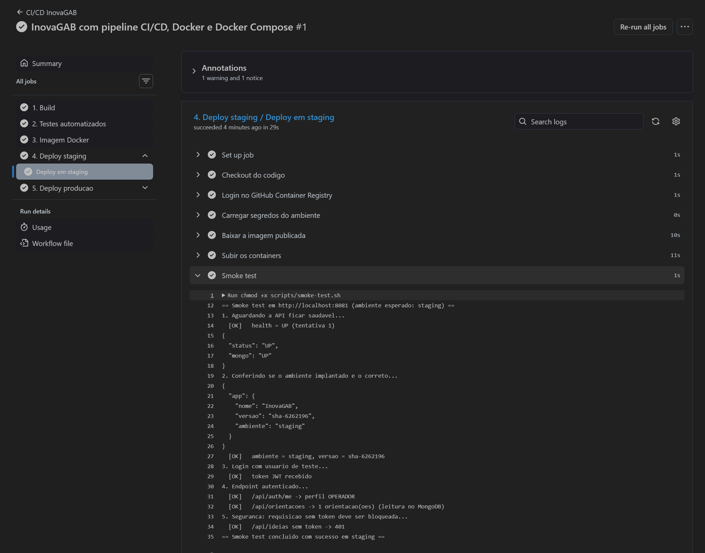
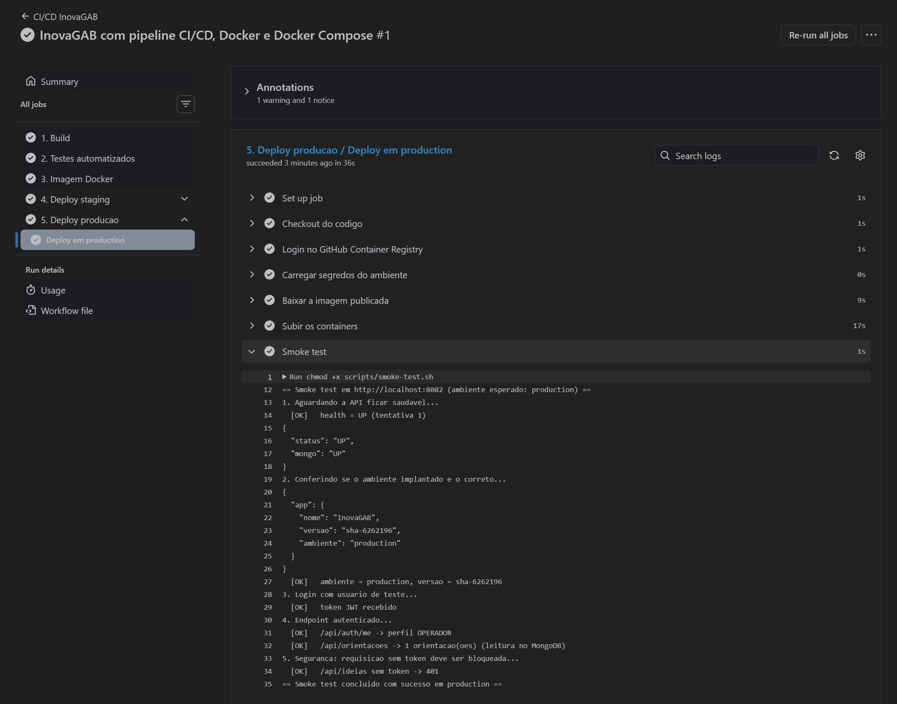
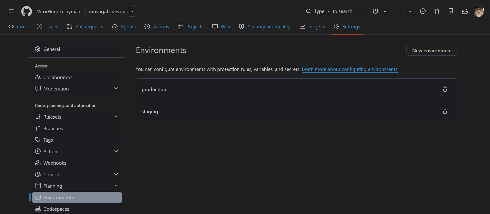

| Integrante | Vitor Hugo — RM 559349 |
| Projeto base | API REST InovaGAB (Java 21 · Spring Boot 3.3 · MongoDB 7) |
| Ferramenta CI/CD | GitHub Actions |
| Orquestração | Docker Compose |
| Ambientes | Staging e Produção |
O InovaGAB é a plataforma de inovação corporativa do Grupo Águia Branca: operadores enviam ideias, gestores fazem a curadoria e transformam ideias em projetos, e líderes definem orientações estratégicas e acompanham o portfólio em um dashboard. A API foi desenvolvida nas sprints anteriores em Java Spring Boot com MongoDB.
Neste desafio a aplicação foi preparada para um fluxo de entrega contínua: o código é compilado e testado automaticamente a cada alteração, empacotado em uma imagem Docker versionada e implantado em dois ambientes — staging e produção — com validação automática após cada deploy.
| Componente | Responsabilidade |
|---|---|
api | API REST (autenticação JWT, ideias, projetos, pontos, dashboard, auditoria, IA). Exposta na porta do ambiente. |
mongo | Banco de dados. Acessível apenas pela rede interna inovagab-net, com usuário e senha. |
mongo-data | Volume nomeado que persiste os dados do MongoDB entre reinícios dos containers. |
| GHCR | GitHub Container Registry: guarda as imagens versionadas geradas pelo pipeline. |
Ferramenta: GitHub Actions. O pipeline está em .github/workflows/ci-cd.yml e o deploy,
comum aos dois ambientes, em .github/workflows/deploy.yml (workflow reutilizável). Usar o
mesmo workflow para staging e produção garante que os dois ambientes são implantados pelos mesmos passos.
mvn compilemvn verify| Etapa | O que acontece |
|---|---|
| 1. Build | Checkout, instalação do JDK 21 (Temurin) com cache do repositório Maven e compilação. Um erro de compilação interrompe o pipeline. |
| 2. Testes automatizados | mvn verify executa os 32 testes das regras de negócio (pontuação, dupla aprovação, prioridade, ROI, agregados do dashboard). O resumo vai para a página da execução e os relatórios Surefire e o .jar ficam disponíveis como artefatos por 14 dias. |
| 3. Imagem Docker | Build multi-stage com cache de camadas (type=gha) e publicação no GHCR com as tags sha-<commit>, <branch> e latest. Em pull requests a imagem é apenas construída, validando o Dockerfile sem publicar. |
| 4. Deploy staging | Baixa a imagem sha-<commit>, sobe API + MongoDB com env/staging.env e os secrets do environment staging, aguarda os healthchecks (--wait) e roda o smoke test. |
| 5. Deploy produção | Só na branch main e só se staging passou. Mesma imagem, com env/production.env e os secrets do environment production. Pode exigir aprovação manual (Required reviewers). |
| Evento | Build | Testes | Imagem | Staging | Produção |
|---|---|---|---|---|---|
Pull request para main | ✔ | ✔ | só build | — | — |
Push em develop | ✔ | ✔ | ✔ | ✔ | — |
Push em main | ✔ | ✔ | ✔ | ✔ | ✔ |
scripts/smoke-test.sh roda contra o ambiente recém-implantado e falha o pipeline se qualquer verificação não passar:
/actuator/health com status UP e o MongoDB conectado;/actuator/info informando o ambiente esperado (staging ou production) e a versão implantada;/api/auth/me e /api/orientacoes autenticados (leitura real no banco);sha-<commit>
construída na etapa 3. O artefato validado em staging é o mesmo que chega à produção — não há rebuild entre ambientes.
runs-on por um
self-hosted runner instalado no servidor.
# ---------- Estagio 1: build ----------
FROM maven:3.9-eclipse-temurin-21 AS build
WORKDIR /build
COPY pom.xml .
RUN mvn -B -q dependency:go-offline # dependências em cache
COPY src ./src
RUN mvn -B -q package -DskipTests \
&& cp target/inovagab-backend-*.jar app.jar
# ---------- Estagio 2: runtime ----------
FROM eclipse-temurin:21-jre-alpine
RUN addgroup -S inovagab && adduser -S inovagab -G inovagab
WORKDIR /app
COPY --from=build --chown=inovagab:inovagab /build/app.jar app.jar
USER inovagab # não-root
ENV SERVER_ADDRESS=0.0.0.0 SERVER_PORT=8080 \
JAVA_OPTS="-XX:MaxRAMPercentage=75.0 -XX:+UseContainerSupport"
EXPOSE 8080
HEALTHCHECK --interval=15s --timeout=5s --start-period=60s --retries=5 \
CMD wget -qO- http://127.0.0.1:8080/actuator/health/liveness || exit 1
ENTRYPOINT ["sh", "-c", "exec java $JAVA_OPTS -jar /app/app.jar"]
| Item | Valor |
|---|---|
| Registro | ghcr.io/<usuario>/<repositorio>/inovagab-backend |
| Tags | sha-<commit> (imutável, usada no deploy), main / develop, latest |
| Base de execução | eclipse-temurin:21-jre-alpine — sem Maven nem JDK na imagem final |
| Usuário | inovagab (não-root) |
| Porta | 8080 |
| Recurso | Uso |
|---|---|
| Serviços | api e mongo |
| Rede | inovagab-net (bridge). O MongoDB não publica porta: só a API o acessa pelo nome mongo. |
| Volume | mongo-data em /data/db |
| Variáveis de ambiente | SPRING_PROFILES_ACTIVE, APP_AMBIENTE, APP_VERSION, MONGODB_URI (com usuário/senha), JWT_SECRET, SEED_ENABLED, GEMINI_API_KEY, JAVA_OPTS |
| Ordem de subida | depends_on com condition: service_healthy |
| Isolamento por ambiente | Cada ambiente sobe como um projeto Compose próprio (-p inovagab-staging / -p inovagab-production), com rede, volume e porta separados. |
| Local | Staging | Produção | |
|---|---|---|---|
| Arquivo | .env | env/staging.env | env/production.env |
| Perfil Spring | default | staging | prod |
| Porta | 8080 | 8081 | 8082 |
| Log | DEBUG | DEBUG | INFO |
| Validade do JWT | 480 min | 480 min | 120 min |
| Segredos | valores de desenvolvimento | secrets do environment staging | secrets do environment production |
# local: build da imagem e subida de API + banco docker compose up -d --build docker compose ps docker compose logs -f api docker compose down # mantém os dados | down -v apaga o volume # ambientes isolados (os mesmos usados no pipeline) docker compose -p inovagab-staging --env-file env/staging.env up -d --build docker compose -p inovagab-production --env-file env/production.env up -d --build # no pipeline (deploy.yml) docker compose -p inovagab-staging --env-file env/staging.env pull docker compose -p inovagab-staging --env-file env/staging.env up -d --no-build --wait ./scripts/smoke-test.sh http://localhost:8081 staging

main: build, testes, imagem, staging e produção.



UP com MongoDB, /actuator/info com ambiente: staging e smoke test aprovado.
ambiente: production e smoke test aprovado.
staging e production registrados no GitHub.| Desafio | Como foi resolvido |
|---|---|
A API escutava apenas em 127.0.0.1, o que impede acesso de fora do container. |
O endereço passou a vir da variável SERVER_ADDRESS: continua 127.0.0.1 na execução local sem Docker e o Dockerfile define 0.0.0.0. |
A chave da API do Gemini estava escrita no application.yml, ou seja, iria para o repositório e para a imagem. |
A chave foi removida do código. Agora vem de GEMINI_API_KEY (arquivo .env local, fora do Git, ou secret do GitHub Environment). Sem ela, os endpoints de IA respondem 503 e o resto da API funciona. |
| O MongoDB rodava sem autenticação e com porta aberta no host. | O banco agora tem usuário e senha e não publica porta: só a API o acessa pela rede interna inovagab-net. |
| Sem controle de ordem, a API pode subir antes de o banco aceitar conexões e falhar na carga inicial de dados. | Healthcheck no MongoDB (mongosh ping) e depends_on: condition: service_healthy na API. No pipeline, docker compose up --wait só segue quando os dois estão saudáveis. |
| Garantir que produção recebe exatamente o que foi testado em staging. | A imagem é construída uma única vez com a tag imutável sha-<commit> e promovida para os dois ambientes. Produção depende do sucesso de staging. |
| Ter configuração e segredos diferentes por ambiente sem duplicar o pipeline. | Um único docker-compose.yml parametrizado, arquivos env/staging.env e env/production.env, perfis Spring staging e prod, GitHub Environments para os secrets e um workflow de deploy reutilizável. |
| Comprovar que o deploy realmente funcionou, e não apenas que o container subiu. | Smoke test pós-deploy com login JWT, leitura autenticada no banco, verificação do ambiente via /actuator/info e checagem de segurança (401 sem token). |
| O registro GHCR exige nome de imagem em minúsculas, e o nome do repositório pode ter maiúsculas. | O nome é convertido com ${GITHUB_REPOSITORY,,} no passo que define as tags. |
| A máquina de desenvolvimento tinha Java 17, mas o projeto exige Java 21. | A compilação foi levada para dentro do container (estágio maven:3.9-eclipse-temurin-21) e para o runner do pipeline, eliminando a dependência da versão instalada localmente. |
| Item | OK |
|---|---|
| Projeto compactado em .ZIP com estrutura organizada | ☑ |
| Dockerfile funcional | ☑ |
| docker-compose.yml ou arquivos Kubernetes | ☑ |
| Pipeline com etapas de build, teste e deploy | ☑ |
| README.md com instruções e prints | ☑ |
| Documentação técnica com evidências (PDF ou PPT) | ☑ |
| Deploy realizado nos ambientes staging e produção | ☑ |
| Categoria | Tecnologia |
|---|---|
| Linguagem / framework | Java 21, Spring Boot 3.3 (Web, Security, Data MongoDB, Validation, Actuator) |
| Banco de dados | MongoDB 7 |
| Testes | JUnit 5, Mockito, Spring Boot Test |
| Build | Maven 3.9 |
| Containerização / orquestração | Docker (multi-stage), Docker Compose v2 |
| CI/CD | GitHub Actions, GitHub Environments, GitHub Container Registry |